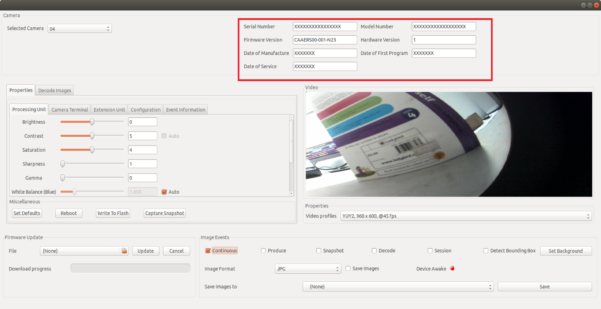
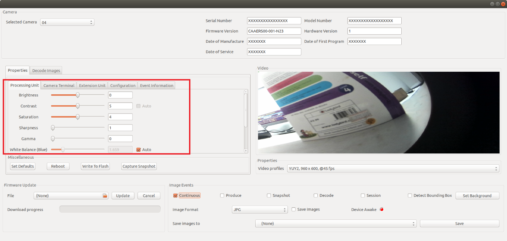
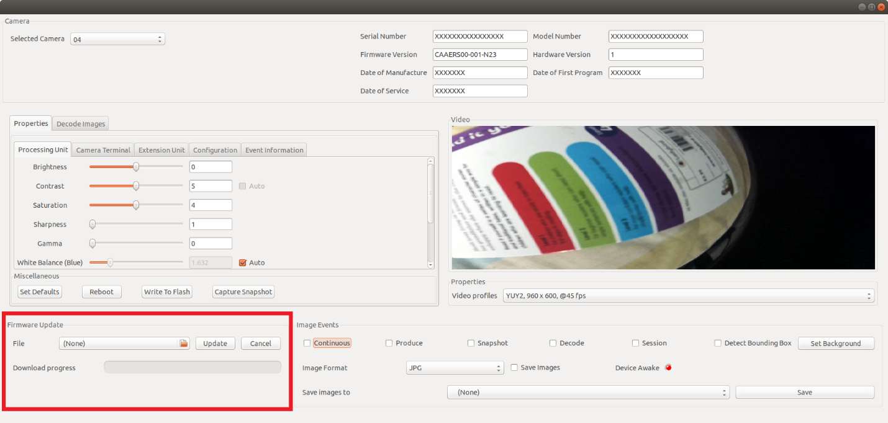
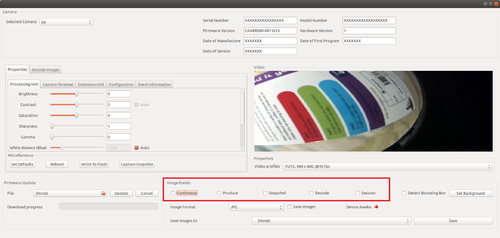
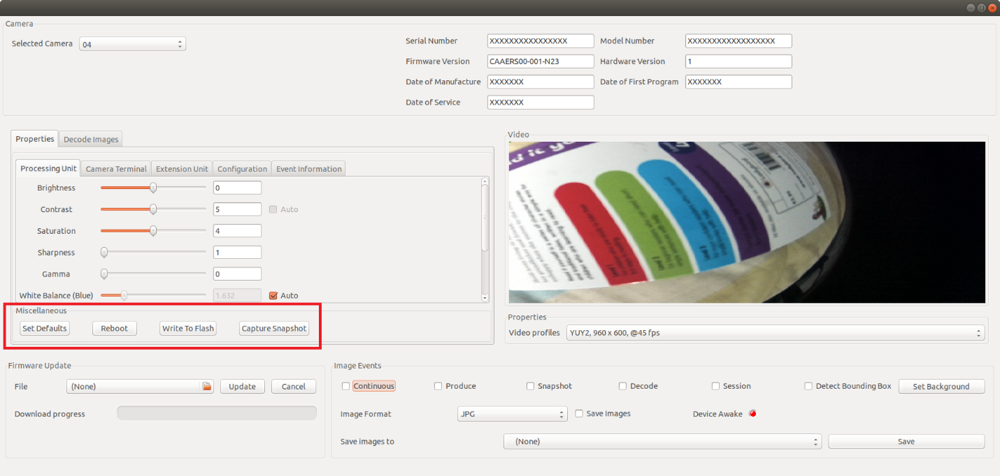

Camera SDK APIs
zebra camera multi-client API is not thread-safe and it is not safe to use from different threads even with locking.
The include files shown in the code snippet given below need to be included in the ‘.cpp’ file which will be used for calling the APIs.
#include "device_manager.h"
#include "zebra_camera_manager_client.h"
#include "zebra_camera_client.h"
To call most of the API s in the SDK, an object of type ‘ZebraCameraClient’ is needed. The way in which this is accomplished is explained with the following code snippets. ‘ZebraCameraClient’ object used beyond this point of the guide is assumed to have undergone the initialization steps described in this section.
Firstly, an object of the class ‘DeviceManager’ is created.
DeviceManager mgr;
With a call to the method ‘EnumerateDevices()’, the list ‘devinfolist’ gets filled with the connected camera devices.
std::vector<DeviceInfo> devinfolist = mgr.EnumerateDevices();
Then an object of ‘ZebraCameraManagerClient’ is created by calling the ‘CreateZebraCameraManagerClient()’ method.
std::unique_ptr<zebra::camera_sdk::ZebraCameraManagerClient> cammgr = zebra::camera_sdk::CreateZebraCameraManagerClient();
The above created object along with the ‘devinfolist’ list can be used to create an object of type ‘ZebraCameraClient’’.
std::shared_ptr<zebra::camera_sdk::ZebraCameraClient> camera = cammgr->CreateZebraCamera(devinfolist[0]);
Asset Tracking APIs
Once an object of ‘ZebraCameraClient’ is created, user is able to retrieve camera asset information such as the serial number, model number, date of manufacture, date of first program, first service date, firmware version, and hardware version of an MP7 device.
std::shared_ptr<zebra::camera_sdk::ZebraCameraClient> camera

Figure 1: Asset Information
Value retrieval is best explained by the code snippets provided below.
std::string serial_number = camera->GetSerialNumber(); // serial number
std::string model_number = camera->GetModelNumber(); // model number
std::string date_of_manuf = camera->GetDateOfManufacture(); // date of manufacture
std::string date_of_prog = camera->GetDateOfFirstProgram(); // date of first program
std::string date_of_ser = camera->GetFirstServiceDate(); // first server date
std::string firmware_ver = camera->GetFirmwareVersion(); // firmware version
std::string hardware_ver = camera->GetHardwareVersion(); // hardware version
Camera Processing Unit
Properties and the corresponding property values of Camera specification such as Brightness, Contrast, Saturation, Sharpness , Gamma, White Balance and Backlight can be obtained by the user with the code snippets and the explainations provided below.

Figure 2: Camera Processing Unit
Brightness
Camera brightness of the MP7 along with various properties of brightness can be obtained with an object of type 'ZebraCameraClient'.
std::shared_ptr<zebra::camera_sdk::ZebraCameraClient> camera
The ways to retrieve said properties are provided below as code snippets.
// Returns the current value set for Brightness.
int16_t brightness = camera->Brightness.Value();
// Returns the minimum value possible for Brightness.
int16_t brightness = camera->Brightness.Minimum();
// Returns the maximum value possible for Brightness.
int16_t brightness = camera->Brightness.Maximum();
// Returns the resolution value of Brightness.
int16_t brightness = camera->Brightness.Resolution();
// Returns the default value set for Brightness.
int16_t brightness = camera->Brightness.Default();
Contrast
In order to retrieve different properties associated with Contrast, first an object of type ‘ZebraCameraClient’ is created.
std::shared_ptr<zebra::camera_sdk::ZebraCameraClient> camera
Value retrieval for the properties affiliated with Contrast is explained with the code snippets provided below.
//Returns the current value of Contrast.
int16_t contrast = camera->Contrast.Value();
//Returns the minimum possible value that can be given for Contrast.
int16_t contrast = camera->Contrast.Minimum();
//Returns the maximum possible value that can be given for Contrast.
int16_t contrast = camera->Contrast.Maximum();
//Returns the resolution of Contrast.
int16_t contrast = camera->Contrast.Resolution();
//Returns the default value of Contrast.
int16_t contrast = camera->Contrast.Default();
Saturation
Properties affiliated with Saturation can be obtained with an object of type 'ZebraCameraClient'.
std::shared_ptr<zebra::camera_sdk::ZebraCameraClient> camera
Property value retrieval is described using the code snippets given below.
// Returns the current value of Saturation.
int16_t saturation = camera->Saturation.Value();
// Returns the minimum possible value that can be given for Saturation.
int16_t saturation = camera->Saturation.Minimum();
// Returns the maximum possible value that can be given for Saturation.
int16_t saturation = camera->Saturation.Maximum();
// Returns the resolution value of Saturation.
int16_t saturation = camera->Saturation.Resolution();
// Returns the default value of Saturation.
int16_t saturation = camera->Saturation.Default();
Sharpness
After creating an object of type ‘ZebraCameraClient’, properties of Sharpness can be obtained.
std::shared_ptr<zebra::camera_sdk::ZebraCameraClient> camera
// Returns the current value set for Sharpness.
int16_t sharpness = camera->Sharpness.Value();
// Returns the minimum possible value that can be provided for Sharpness.
int16_t sharpness = camera->Sharpness.Minimum();
// Returns the maximum possible value that can be provided for Sharpness.
int16_t sharpness = camera->Sharpness.Maximum();
// Returns the resolution value of Sharpness.
int16_t sharpness = camera->Sharpness.Resolution();
// Returns the default value of Sharpness
int16_t sharpness = camera->Sharpness.Default();
Gamma
Provided below are code snippets for obtaining properties associated with Gamma with the help of an object of type ‘ZebraCameraClient’.
std::shared_ptr<zebra::camera_sdk::ZebraCameraClient> camera
// Returns the current value set for Gamma.
int16_t gamma = camera->Gamma.Value();
// Returns the minimum possible value that can be given for Gamma.
int16_t gamma = camera->Gamma.Minimum();
// Returns the maximum possible value that can be given for Gamma.
int16_t gamma = camera->Gamma.Maximum();
// Returns the resolution value of Gamma.
int16_t gamma = camera->Gamma.Resolution();
// Returns the default value of Gamma.
int16_t gamma = camera->Gamma.Default();
White Balance
As the first step, an object of type ‘ZebraCameraClient’ is created.
std::shared_ptr<zebra::camera_sdk::ZebraCameraClient> camera
Then the values are retrieved with the help of the created pointer as shown below.
// Returns the current value of White Balance Component.
zebra::camera_sdk::WhiteBalance wbc = camera->WhiteBalanceComponent.Value();
// Returns the minimum possible value that can be given for White Balance Component.
zebra::camera_sdk::WhiteBalance wbc = camera->WhiteBalanceComponent.Minimum();
// Returns the maximum possible value that can be given for White Balance Component.
zebra::camera_sdk::WhiteBalance wbc = camera->WhiteBalanceComponent.Maximum();
// Returns the resolution value of White Balance Component.
zebra::camera_sdk::WhiteBalance wbc = camera->WhiteBalanceComponent.Resolution();
// Returns the default value of White Balance Component.
zebra::camera_sdk::WhiteBalance wbc = camera->WhiteBalanceComponent.Default();
Backlight
Once an object of type ‘ZebraCameraClient’ is created, retrieval of property values of Backlight is shown in below code snippets.
std::shared_ptr<zebra::camera_sdk::ZebraCameraClient> camera
// Returns the value set for Backlight Compensation.
int16_t blc = camera->BacklightCompensation.Value();
// Returns the minimum possible value for Backlight Compensation.
int16_t blc = camera->BacklightCompensation.Minimum();
// Returns the maximum possible value for Backlight Compensation.
int16_t blc = camera->BacklightCompensation.Maximum();
// Returns the resolution value for Backlight Compensation.
int16_t blc = camera->BacklightCompensation.Resolution();
// Returns the default value set for Backlight Compensation.
int16_t blc = camera->BacklightCompensation.Default();
Gain
With an object of type ‘ZebraCameraClient’, properties affiliated with Gain can be obtained as follows.
std::shared_ptr<zebra::camera_sdk::ZebraCameraClient> camera
// Returns the current value set for Gain.
int16_t gain = camera->Gain.Value();
// Returns the minimum possible value that can be given for Gain.
int16_t gain = camera->Gain.Minimum();
// Returns the maximum possible value that can be used for Gain.
int16_t gain = camera->Gain.Maximum();
// Returns the resolution value of Gain.
int16_t gain = camera->Gain.Resolution();
// Returns the default value set for Gain.
int16_t gain = camera->Gain.Default();
Absolute Exposure Time
As described in the sections above, an object of type ‘ZebraCameraClient’ is created as the first step.
std::shared_ptr<zebra::camera_sdk::ZebraCameraClient> camera
Properties associated with Absolute Exposure Time, such as the current, minimum, maximum and default resolution can be obtained with the above created object as shown by the code snippets given below.
uint32_t aet = camera->AbsoluteExposureTime.Value();
uint32_t aet = camera->AbsoluteExposureTime.Minimum();
uint32_t aet = camera->AbsoluteExposureTime.Maximum();
uint32_t aet = camera->AbsoluteExposureTime.Resolution();
uint32_t aet = camera->AbsoluteExposureTime.Default();
In order to check if Absolute Exposure time is Auto supported, the below code line can be used.
bool auto_supported = camera->AbsoluteExposureTime.IsAutoSupported();
The below code line is used to check if Absolute Exposure Time is auto enabled or not.
bool auto_enabled = camera->AbsoluteExposureTime.IsAutoEnabled();
The way in which the Absolute Exposure Time is set to Auto is explained below.
camera->AbsoluteExposureTime.AutoEnable(true);
The way in which the Auto property is removed from Absolute Exposure Time is explained below.
camera->AbsoluteExposureTime.AutoEnable(false);
Absolute Exposure Time
Video Mode
Value set for the Video mode can be retrieved with an object of type ‘ZebraCameraClient’.
std::shared_ptr<zebra::camera_sdk::ZebraCameraClient> camera
The current and default value retrieval for Video Mode is described by the following code lines.
zebra::camera_sdk::VideoMode vm = camera->VideoModeSetting.Value();
zebra::camera_sdk::VideoMode vm = camera->VideoModeSetting.Default();
Illumination Mode
First, an object of ‘ZebraCameraClient’ has to be created.
std::shared_ptr<zebra::camera_sdk::ZebraCameraClient> camera
Using the created object, value set for the Illumination mode can be obtained as follows.
zebra::camera_sdk::IlluminationMode illum = camera->IlluminationModeSetting.Value();
The default value set for the illumination mode can be retrieved as shown below.
zebra::camera_sdk::IlluminationMode illum = camera->IlluminationModeSetting.Default();
Firmware Update
Described below is the way in which the firmware update can be done using the SDK. An object of ‘ZebraCameraManagerClient’ and an object of ‘ZebraCameraClient’ need to be created. The path of the firmware file has to be given in the form of a string. The way in which these objects are initialized is described in the ‘Camera SDK API’ section.

Figure 3: Firmware Update
std::unique_ptr<zebra::camera_sdk::ZebraCameraManagerClient>& mgr
std::shared_ptr<zebra::camera_sdk::ZebraCameraClient> camera
std::string filepath
In order to capture events, an object of the ‘FirmwareDownloadEventObserver’ is created.
class FirmwareDownloadEventObserver: public zebra::camera_sdk::FirmwareDownloadEventListener
{
public:
void EventReceived(zebra::camera_sdk::FirmwareDownloadEventsArgs event) override
{
printf("%s: opcode=%x, record=%d\n", __func__, (int)event.GetOperationCode(), event.GetCurrentRecord());
}
};
Functions such as update the UI can be done, once a firmware update event is triggered and notified by the above method. With the below given code line, registering for the firmware download event is accomplished.
FirmwareDownloadEventObserver firmwareObs;
mgr->AddFirmwareDownloadEventListener(firmwareObs);
Once the pointer ‘camera’ and the firmware file location are provided, downloading of the firmware file gets completed and progress events will be received from the above Event Observer method.
mgr->DownloadFirmware(camera, filepath);
Installation of the firmware is achieved as follows.
mgr->InstallFirmware(camera);
Finally, the firmware event listener can be removed using the below given code line.
mgr->RemoveFirmwareDownloadEventListener(firmwareObs);
Image Events

Figure 4: Image Events
Continuous Image Event
A continuous image event is occurred whenever a continuous video stream is displayed in the UI. With the method given in the code snippet below, user can be notified of the event occurrence. Registering and un-registering for the Continuous Image Event can be done by checking and unchecking the checkbox provided in the sample application.
class ContinuousImageEventObserver: public ContinuousImageEventListener {
public:ata md)
{
printf("ContinuousImageEventObserver: width=%d, height=%d, image_number=%d\n", ev.image.width, ev.image.height, md.image_number);
}
};
Firstly, an object of ‘ContinuousImageEventObserver’ class is created. Registering and unregistering for the event can be done with the newly created object.
ContinuousImageEventObserver continuousObs;
Registering for Continuous Image Events.
camera->AddContinuousImageEventListener(continuousObs);
Unregistering from Continuous Image Events.
camera->RemoveContinuousImageEventListener(continuousObs);
Produce Image Event
When MP7 reads a stable weight after the registration, this event will be captured by the method given below. User may have logs printed in order to be notified of the event capture.
class ProduceImageEventObserver: public ProduceImageEventListener
{
public:
void ImageReceived(ImageEventData ev, ImageEventMetaData md)
{
(void)md;
printf("ProduceImageEventObserver: width=%d, height=%d\n", ev.image.width, ev.image.height);
}
};
Once an object of the type ‘ProduceImageEventObserver’ is created, registering and unregistering for the said event can be performed as shown in the code snippets given below.
ProduceImageEventObserver produceObs;
Registering for Produce Image events.
camera->AddProduceImageEventListener(produceObs);
Unregistering from Produce Image events.
camera->RemoveProduceImageEventListener(produceObs);
Decode Image Event
Registration and Un-registration for the ‘Decode’ image event is same as that for the above described events. When a barcode is read by the MP7 scanner, decode image and the decode data can be captured as an event as shown in the code snippet below.
class DecodeImageEventObserver: public DecodeImageEventListener
{
public:
void ImageReceived(ImageEventData ev, ImageEventMetaData md)
{
printf("DecodeImageEventObserver: width=%d, height=%d, decoded=%s\n", ev.image.width, ev.image.height, md.decode_data.c_str());
string filename = string("Decode-") + md.decode_data + string(".jpg");
}
};
With an object of type ‘DecodeImageEventObserver’ decode event registration and un-registration can be done as shown in the code snippets below.
DecodeImageEventObserver decodeObs;
Registering for Decode Image events.
camera->AddDecodeImageEventListener(decodeObs);
Unregistering from Decode Image events.
camera->RemoveDecodeImageEventListener(decodeObs);
Snapshot Image Event
A snapshot can be captured by the button present in the MP7 as well using the Camera SDK sample application. Once a snapshot is captured, ‘Snapshot’ image event will be notified of the occurrence of the event. If the user wishes to, captured snapshot can be saved using the ‘Save’ button present in the UI.
The method that captures the snapshot image event is provided below. Event occurrence can be verified with logs if the user wishes to be notified.
class SnapshotImageEventObserver: public SnapshotImageEventListener
{
public:
void ImageReceived(ImageEventData ev, ImageEventMetaData md)
{
(void)md;
printf("SnapshotImageEventObserver: width=%d, height=%d\n", ev.image.width, ev.image.height);
}
};
Registering for Snapshot Image events.
SnapshotImageEventObserver snapshotObs;
camera->AddSnapshotImageEventListener(snapshotObs);
Unregistering from Snapshot Image events.
camera->RemoveSnapshotImageEventListener(snapshotObs);
Decode Session Status Change Image Event
This event gets triggered whenever an object enters and exits the field of view of the scanner.Once the event is captured, the user may check the status of the event using the method given below.
class DecodeSessionStatusChangeEventObserver: public DecodeSessionStatusChangeEventListener
{
public:
void DecodeSessionStatusChanged(DecodeSessionStatus status) override;
};
Registering and unregistering for the said event can be done with an object of type ‘DecodeSessionStatusChangeEventObserver’
DecodeSessionStatusChangeEventObserver decode_session_status_change_listener_;
Registering for Decode Session Status Change event.
camera->AddDecodeSessionStatusChangeEventListener(decode_session_status_change_listener_);
Unregistering from Decode Session Status Change event.
camera->RemoveDecodeSessionStatusChangeEventListener(decode_session_status_change_listener_);
Set Defaults

Figure 5: Set Defaults
With the following code snippet, reverting the current camera property values such as Brightness, Contrast etc. to the respective default values can be accomplished.
camera->SetDefaults();
Reboot
A device reboot can be done with the code line provided below. The creation and the initialization of the ‘cammgr’ object is provided in the ‘Camera SDK API’ section.
cammgr ->Reboot(camera);
Load Configuration
Provided below is a sample settings XML that can be loaded in to the MP7 camera.
<cameraconfig>
<metadata>
<modelnumber>XXXXXXXXXXXXXXXXXX</modelnumber>
<serialnumber>XXXXXXXXXXXXXXXX</serialnumber>
<firmware>CAAERS00-001-N21</firmware>
<hardwareversion>1</hardwareversion>
</metadata>
<attrib_list>
<attribute>
<id>8194</id>
<name>Brightness</name>
<value>8</value>
</attribute>
<attribute>
<id>8195</id>
<name>Constrast</name>
<value>10</value>
</attribute>
<attribute>
<id>8199</id>
<name>Saturation</name>
<value>8</value>
</attribute>
<attribute>
<id>8200</id>
<name>Sharpness</name>
<value>4</value>
</attribute>
<attribute>
<id>8201</id>
<name>Gamma</name>
<value>25</value>
</attribute>
<attribute>
<id>8204</id>
<name>White alance</name>
<value>
<red>3469</red>
<blue>11735</blue>
</value>
</attribute>
<attribute>
<id>8193</id>
<name>Backlight</name>
<value>10</value>
</attribute>
<attribute>
<id>8196</id>
<name>Gain</name>
<value>3</value>
</attribute>
<attribute>
<id>2052</id>
<name>Absolute Exposure Time</name>
<value>-10</value>
</attribute>
<attribute>
<id>32769</id>
<name>Video Mode</name>
<value>2</value>
</attribute>
<attribute>
<id>32770</id>
<name>Illumination Mode</name>
<value>0</value>
</attribute>
</attrib_list>
</cameraconfig>
Loading the set configuration with an object of type ‘ZebraCameraManagerClient’ can be achieved with the help of the following code lines.
std::unique_ptr camera_manager_client_;
auto camera = GetCamera();
if (camera)
{
std::string camera_configuration = std::string(TextCtrlConfiguration->GetValue());
if (camera_configuration.compare("") != 0 )
{
try
{
camera_manager_client_->LoadConfiguration(camera, camera_configuration);
}
catch (std::exception& e)
{
wxString msg;
msg.Printf(wxT("%s"), e.what());
wxMessageBox(msg, _("Load configuration into color camera"), wxICON_ERROR);
}
}
else
{
wxString msg;
msg.Printf(wxT("%s"), "load configuration into color camera failed: Empty configuration provided");
wxMessageBox(msg, _("Load configuration"), wxICON_ERROR);
}
}
Retrieve Configuration
Configuration retrieval is accomplished with the help of an object of the type ‘ZebraCameraManagerClient’ as shown in the code snippet given below.
std::unique_ptr camera_manager_client_;
auto camera = GetCamera();
if (camera)
{
std::string camera_config;
try
{
camera_config = camera_manager_client_->RetrieveConfiguration(camera);
TextCtrlConfiguration->SetValue(camera_config);
}
catch (std::exception& e)
{
wxString msg;
msg.Printf(wxT("%s"), e.what());
wxMessageBox(msg, _("Retrieve configuration"), wxICON_ERROR);
}
}
Write to Flash
Writing the camera properties to the Camera memory is achieved with the code line given below.
camera->WriteToFlash();
Image Convertor Library
Developers may make use of the ‘image converter’ library in order to convert the ‘YUY2/ UYVY’ images in to ‘rgb’ format. First, ‘image_converter.h’ file should be included.
Then the ‘ColorConverter’ method is used for converting the images in to ‘rgb’ format. The way in which this image conversion takes place upon receival of continuous images is described in the code snippet given below. Similarly, this operation can be done for other image events such as Produce, Decode and Snapshot.
#include "image_converter.h"
void ContinuousImageObserver::ImageReceived(ImageEventData image, ImageEventMetaData md)
{
(void)md;
zebra::image::ColorConverter converter;
switch (image.format)
{
case ImageFormat::YUY2:
converter = zebra::image::ColorConverter::YUY2_TO_RGB;
break;
case ImageFormat::UYVY:
converter = zebra::image::ColorConverter::UYVY_TO_RGB;
break;
default:
return;
}
wxLogMessage("%s: wxh: %d x %d", __func__, image.image.width, image.image.height);
zebra::camera_sdk::Image rgb = zebra::image::ConvertColor(converter, image.image);
frame_->image_buffer_.CopyToBuffer(rgb.Data(), rgb.Length());
}
Image saving can also be done using the library mentioned above. Based on the user selection, the methods. 'SaveAsJpeg' and 'SaveAsBmp' can be made use of, to save the desired image in the computer.
void ZebraCameraDemoFrame::SaveImage(ImageBuffer& image, std::string str_event_type)
{
if (!save_image_directory_path_.empty() && CheckBoxSaveImages->GetValue())
{
std::time_t t = std::time(nullptr);
char mbstr[128];
std::strftime(mbstr, sizeof(mbstr), "%c", std::localtime(&t));
std::string filepath = save_image_directory_path_ + std::string("/") + GetFileName(str_event_type);
switch (image_file_format_)
{
case ImageFileFormat::JPG:
image.SaveAsJpeg(filepath + std::string(".jpg"));
break;
case ImageFileFormat::BMP:
image.SaveAsBmp(filepath + std::string(".bmp"));
break;
default:
image.SaveAsJpeg(filepath + std::string(".jpg"));
break;
}
}
}
Red illumination detection API
The API is introduced to allow the user to monitor the frames for the presence of a red hue that is occasionally observed on the left and right sides of the image due to the red LED emission of the scanner.
bool isRedIlluminationPresent(int width, int height, uint8_t* data);
Given below is a sample code snippet that can be used to identify the presence of red illumination in a frame.
The header file 'red_illumination_presence.h' is required to be included in the beginning. When the image information of a received frame is made available, the width, height and the image data need to be passed in to the 'isRedIlluminationPresent' API to analyze the presence of red spots.
The width, height and the pixel data of an image can be retrieved from the 'ImageEventData' once any image event is triggered. Namely Continuous, Decode, Snapshot and Produce.
#include "/usr/include/zebra-camera/imaging_library/red_illumination_presence.h"
red_illumination_presence frame;
bool redness_presence= frame.isRedIlluminationPresent(image.width, image.height,const_cast<uint8_t*>(image.data));
Returns true in the event of red illumination presence.
Returns false in the event of red illumination absence.
Based on the presence and the absence of the red hue, the bool value is returned to the user.
Get Frame API
With the 'GetFrame' API, the user is given the capability to call for frames stored in the buffer by passing an integer as a parameter. The option to retrieve the next frame, in the event the user is offered a frame with red illumination present is given with the 'GetFrame' API.
ImageEventData GetFrame(int image_id);
The information such as the width, height, stride, size and raw pixel data can be retrieved with the returned 'ImageEventData' value of the API.
A code snippet detailing how the registration for the image event 'Produce' in the single client mode is provided below.
zebra::DeviceManager device_manager;
ZebraCameraManager camera_manager;
auto info = device_manager.EnumerateDevices();
if (info.size())
{
auto camera = camera_manager.CreateZebraCamera(info[0]);
ProduceImageEventObserver continuousObs;
camera->AddProduceImageEventListener(continuousObs);
sleep(20);
//ImageEventData and ImageMetaData of the received produce images can be found in the ProduceImageEventListener
}
The registration for the image event 'Produce' in multi-client mode is provided below.
DeviceManager mgr;
auto devinfolist = mgr.EnumerateDevices();
cout << "# cams = " << devinfolist.size() << endl;
if (0 == devinfolist.size())
{
exit(0);
}
std::unique_ptr cammgr = zebra::camera_sdk::CreateZebraCameraManagerClient();
std::shared_ptr camera = cammgr->CreateZebraCamera(devinfolist[0]);
ProduceImageEventObserver camobj;
camera->AddProduceImageEventListener(camobj);
Obtaining the frame number of a received Produce image is achieved as shown below. With the knowledge of the frame number, the range of values that can be passed to the 'GetFrame' API can be determined.
class ProduceImageEventObserver: public ProduceImageEventListener
{
public:
void ImageReceived(ImageEventData ev, ImageEventMetaData md)
{
printf("ProduceImageEventObserver: width=%d, height=%d, image_number=%d\n", ev.image.width, ev.image.height, md.image_number);
int frame_no = md.image_number;
// Obtain the image number of the received image to get an idea an idea of which frame to call using 'GetFrame' API
}
};
// Ex:
// ImageEventData img = camera->GetFrame(frame_no + 1);
// ImageEventData img = camera->GetFrame(frame_no + 2);
// ImageEventData img = camera->GetFrame(frame_no + 5);
The way in which the Produce images are received in the multi-client mode is presented below.
class ProduceImageEventObserver: public zebra::camera_sdk::ProduceImageEventListener
{
public:
void ImageReceived(zebra::camera_sdk::ImageEventData ev, zebra::camera_sdk::ImageEventMetaData md)
{
printf("ProduceImageEventObserver: width=%d, height=%d, image_number=%d, size=%d \n", ev.image.width, ev.image.height, md.image_number, ev.image.size);
last_received_frame = md.image_number;
}
};